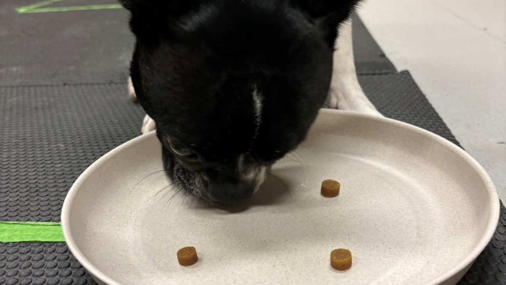
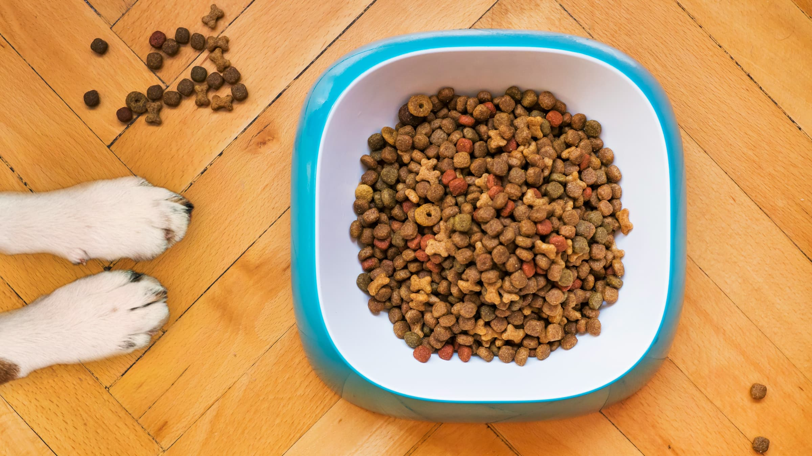
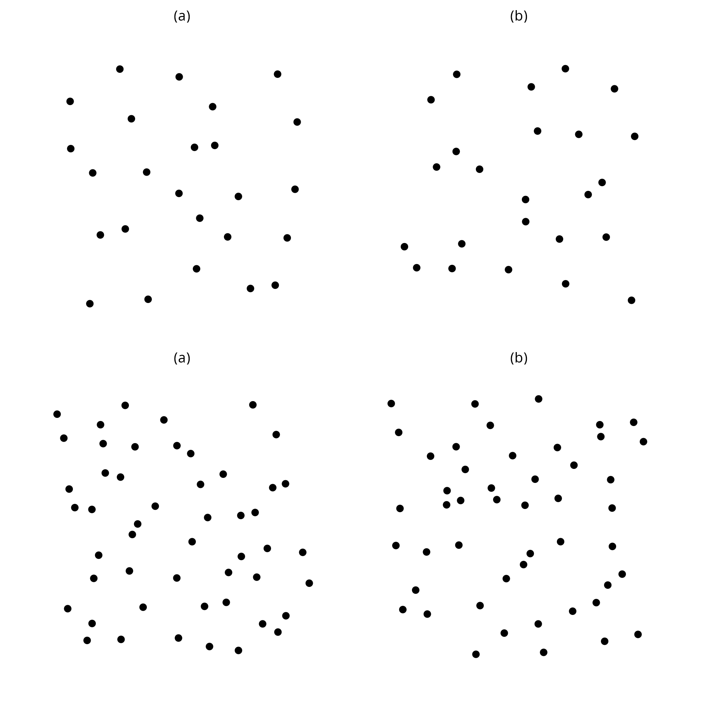
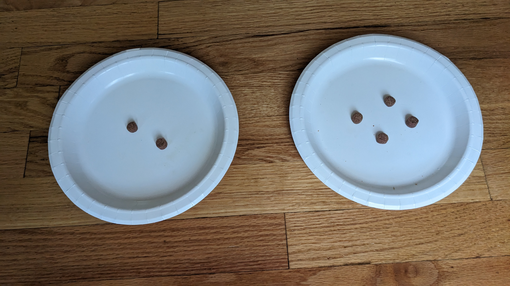
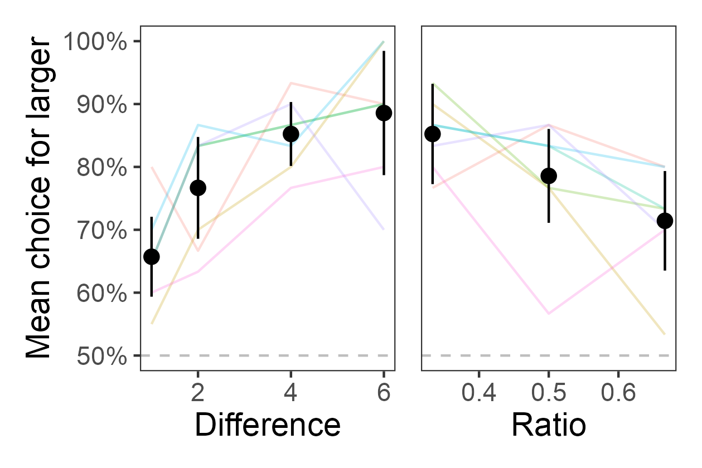
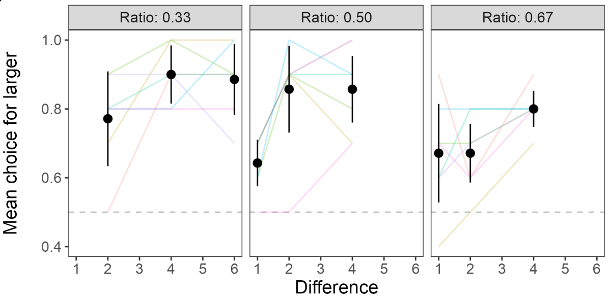

How do dogs quantify things?

We recently published a paper in Psychological Topics that describes our most recent study conducted at the Canine Cognition and Human Interaction Lab (CCHIL). Undergraduates Hunter DeBoer and Hannah Fitzpatrick led this project under the supervision of graduate students Anwyn Gatesy-Davis and London Wolff. This work was conducted in collaboration with Uplifting Paws.
What is quantification?
Quantification is the ability to track quantities of objects in your environment. As humans, we can count individual objects that we perceive, such as eggs in an Easter basket or chimes from a clock. But other species likely do not have words or symbols to represent the number of objects. Instead, they likely compare overall quantities of things that they observe in their environments.

Animal researchers have investigated how many different species quantify lots of different things in their environments. An important question that they’ve asked is how animals compare quantities.
One of the classic explanations of how animals compare quantities is Weber’s Law, which says that the ability to distinguish between two quantities depends on the numerical ratio between the two numbers. For example, the ratio between the numbers 1 and 2 is 1/2 or 0.5. This shares the same ratio as other number pairs like 2 and 4 or 10 and 20.
Weber’s Law states that you will be able to distinguish quantities at the same level if they have the same ratio. So, for instance, in the top panel of the following image, one of the sides (a or b) has 24 dots and the other has 25 dots. In the bottom panel, one side has 48 dots and the other has 50 dots. Can you tell which has more (without counting them)? In both cases, the ratio between the quantities is 0.96 (both 24/25 and 48/50 = 0.96). Therefore, your probability of correctly guessing which group (a or b) has more dots on the top panel should be about the same as the dots on the bottom because they share the same ratio. This is Weber’s Law.

Why is it important?
Quantification is important to animals because they often need to decide whether to hunt a larger or smaller group of prey. They also might need to decide whether to fight or flee a rival group depending on whether the other group has fewer or more members than their own.
At CCHIL, we study dogs, and quantification is important for them, too. For example, herding dogs need to keep their livestock together. If the stock break into two groups, the herding dogs need to decide which group is smaller because it will be easier to herd a smaller group into the larger than vice versa.
We studied dog quantification in the context of food. We expect that in general dogs prefer more over less food. Over the course of their domestication in the last 15,000 or more years, we expect that dogs who could accurately pick more over less food would be more likely to survive and reproduce than the less accurate dogs. So dogs should have a strong preference for more food when they can tell the difference between quantities. Now we just had to see if the ratio between quantities determined their preferences, as predicted by Weber’s Law.
Other studies have already shown that numerical ratio predicts quantity preferences in dogs. However, those studies did not test whether other factors, such as the numerical difference between quantities could also predict preference. Numerical difference is simply subtracting the quantities instead of dividing them. So the numerical difference between 1 and 2 is 1 (2 - 1 = 1). Numerical difference is important is human judgments about quantities1, but, prior to this study, we didn’t know if difference is also important in dog quantity preferences.
What did we do?
We were interested in whether ratio, difference, or both influenced dog’s ability to quantify objects. To test this, we conducted a quantity preference task where we presented subjects with two quantities of treats and let them pick and eat one of the two quantities.

We created 9 different numerical pairs of treats that varied in their ratio and difference. Subjects experienced 10 experimental sessions where they chose between each of the 9 numerical pairs. Seven dogs completed all of these sessions. With this, we could test our research question of whether ratio, difference, or both predicted dog quantity preferences.
What did we find?
We found that both ratio and difference were associated with quantity preference. Dogs preferred the larger quantity more when the ratio was small and the difference was large.

However, ratio and difference are confounded, which means that they are not completely independent. As you change one, you will also change the other. This suggests that we need to do some additional analyses to disentangle whether ratio affects quantity preference independent of difference and whether difference affects quantity preference independent of ratio. After running this analysis, we found that only difference predicted quantity preferences when ratio was held constant.

What does this mean?
When we hold difference constant, ratio does not predict quantity preference. However, when we hold ratio constant, difference does predict quantity preference. So, we found that difference does a better job than ratio of accounting for quantification in dogs.
This was a surprising finding since other studies show ratio effects on quanitification. But those studies did not properly account for difference as a factor influencing quantification. To check whether our results applied to other studies, we ran our same analyses on data sets from two other studies. In both cases, difference accounted for quantification, and ratio did not2.
So across three data sets, we see that difference drives dog quantity preferences. While this doesn’t completely undermine Weber’s Law, it does suggest that we need to investigate Weber’s Law more carefully to figure out when it does and doesn’t work.
For dog owners, this means that cutting up those treats into smaller pieces may actually trick your dog into thinking they’re getting more!
Answer
The left side (a) has more in both the top panel (25 vs. 24) and the bottom panel (50 vs. 48).
Reference
DeBoer, H., Fitzpatrick, H., Wolff, L.M., Gatesy-Davis, A., & Stevens, J.R. (2025). Do dogs follow Weber’s Law? The role of ratio and difference in quantity preference. Psychological Topics, 34(1), 117-137. doi:/10.31820/pt.34.1.6
Footnotes
Stevens, J.R. & Soh, L.-K. (2018). Predicting similarity judgments in intertemporal choice with machine learning. Psychonomic Bulletin & Review, 25(2), 627–635. doi:10.3758/s13423-017-1398-1↩︎
This result holds at small magnitudes (10 or fewer objects). At larger magnitudes, ratio does better than difference.↩︎